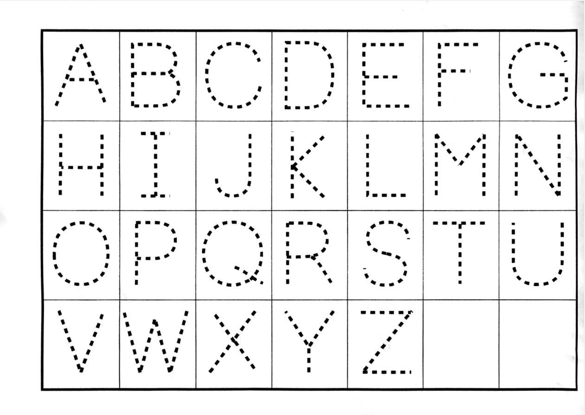
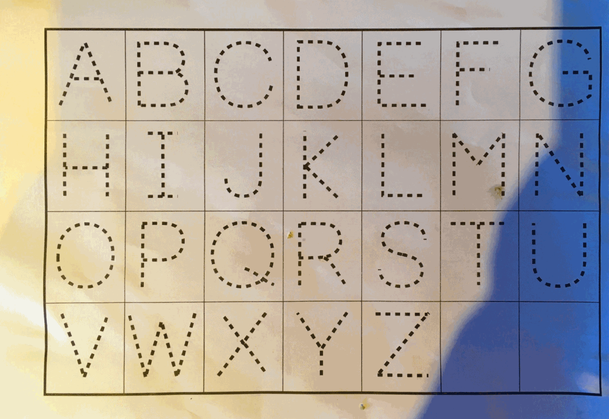
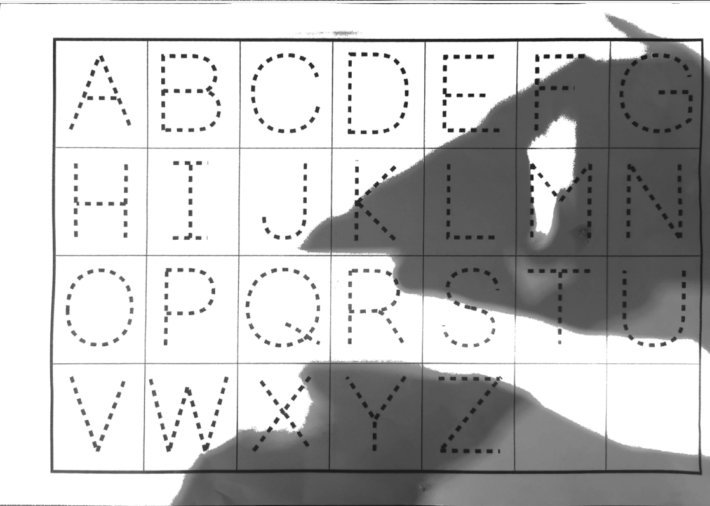
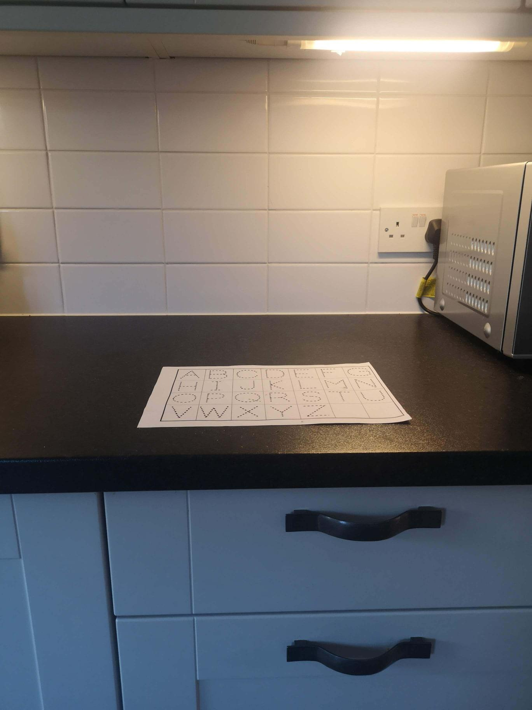

Scanning Documents for Online Tutorial and Exam Submission
You can also download a pdf version of this recommentation.
This document describes how you can use your phone or tablet to produce clear scans of your work as PDF files that are modest in size. The final section is written for Trinity Term 2020 open-book test-takers since these students may be scanning documents under a tight time constraint. If you have any comments of know of software that works better, please let me know at kevin.sheppard@economics.ox.ac.uk.
Flatbed Scanners¶
If you have access to a flatbed scanner, this will produce the highest quality scan. I recommend you use 300dpi in black and white mode when scanning documents for submission. This balances file size against the image's resolution. Grayscale and color generally produce files that are larger and that are not usually easier for assessors or tutors to read.
General Instructions¶
Lighting¶
Poor lighting is the simplest method to produce a scan that is hard or impossible to read. Side lighting is key to creating a high-quality scan when using a phone or tablet. Overhead lighting is your enemy since it is likely that your body or your device will cast an unnecessary shadow. Look around your environment for locations that have a reliable source of side lighting. When scanning in the day, indirect outside light can produce an excellent source for producing high-quality scans. Direct sunlight can lead to overexposure and is not recommended. Alternatively, you might find locations with under cabinet lighting. I have good experience using these. Finally, a desk lamp can be positioned to produce side lighting where both you and your device will not case a shadow. If you do not have a good location with side lighting, you can use your device's flash. In my experience, this produces slightly worse quality scans than having a good lighting setup, but it is much better than having a shadow on your document. The image below shows a scan created with uniform lighting that originated from the side.

Th next scan was created with a strong shadow that was produced by my arm. This tricked the software into thinking that this was a color document.

This final scan was produced by Genius Scan. The divice cast a strong shadow on the page which resulted in a large dark area.

Background¶
Assuming you are writing on white paper, you want to scan on a background that has high contrast. Black, dark brown, and most other dark colors produce high contrast, which lets the software function better. The next image shows my preferred scanning location in my home.

It is a dark kitchen worktop which provides great contrast. It is illuminated by under cabinet lighting, and so I cannot cast shadows with my body or my device. Note that when scanning, I turn off the other lights in the kitchen so that the under-counter lights are the strongest source of illumination.
Device Position¶
It is important that you hold your device level and that the document occupies the majority of the viewfinder when scanning. Most high-quality scanning software will encourage optimal camera positioning.
Multi-page Documents¶
Most documents you scan will consist of multiple pages. You should scan these consecutively by adding a new page to your current scan. If you make a mistake, I recommend reshooting the problematic page and then continuing to the end of the document. All of the recommended software lets you delete a page after you finish scanning.
iOS (iPad/iPhone)¶
There are two apps I recommend: Genius Scan (4.8 rating, 35,000 reviews) and Scanner Pro (4.9 rating 130,000 reviews). Genius Scan is free and has a paid upgrade. It works well enough in the free mode to use for exam and assignment submission. Scanner Pro has a modest price. Both of these apps have great auto edge detection when used on a high contrast background. ScannerPro is more forgiving to uneven lighting and tends to produce softer shadows if present. ScannerPro is my recommendation if the price is not an issue.
Android¶
Genius Scan (4.7 rating, 78,000 reviews) is also available for Android and is, in my experience, the most accurate scanner. CamScanner (4.8 rating, 2.5M reviews) also works well, although it is not as accurate at automatic edge detection. It does have some party trick modes that work well if you have a text that is mostly monochrome text but contains a full-color diagram. Genius Scan is my recommendation if you have a good lighting setup. If not, I would use CamScanner.
There are many other scanners, so please do try others if you are not happy with these.
Trinity Term 2020 Test Takers¶
Moving your PDF¶
You will most likely want to move your scan onto your laptop before uploading it to the submission server. You must have a good, reliable, and quick method for moving your file out of your scanning software. I almost always upload to Dropbox (Google Drive and OneDrive are also good choices) and use email as a backup if Dropbox fails. You can also save the file locally and then use a free service like Firefox Send (https://send.firefox.com/) to move the file if needed.
Practice, Practice, and Practice Again¶
If you are preparing for exams, you must practice with whatever method you are going to use. You need to practice scanning documents that have sizes that you expect to have for your exam, i.e., 10 – 15 pages, depending on your handwriting. You should practice until scanning and getting the document off of your device until it is second nature. The last thing you want is to be stressed in the final minutes of an open -book exam. You should:
- know which app you are going to use;
- know where you will be scanning your paper;
- know how you will get your PDF off of your device;
- have a backup method to get it off your device (e.g., a USB cable to your laptop or using a temporary upload service like Firefox Send)
You should practice the entire process during the University dry-runs. Be sure to check the size of the file produced using your preferred method. Larger files are more likely may cause difficulties uploading, all things equal.
ALWAYS UPLOAD SOMETHING¶
If you are pressed for time and are having any difficulties, you must upload any copy, no matter how poor, of your exams before the deadline. Your uploaded copy will be inspected, and if it is illegible, then you will be asked to upload a better version later. The improved copy will be compared to the original submission to verify that it contains the same material.